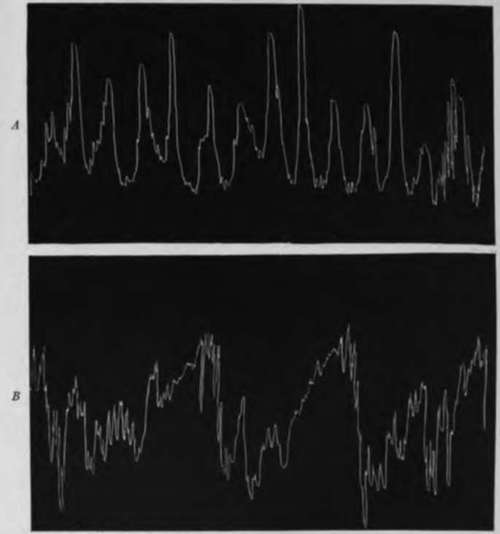

6. Increase In Gastric Tonus And Hunger Contractions In Dogs After Partial Occlusion Of The Pylorus
Description
This section is from the book "The Control Of Hunger In Health And Disease", by Anton Julius Carlson. Also available from Amazon: The Control of Hunger in Health and Disease.
6. Increase In Gastric Tonus And Hunger Contractions In Dogs After Partial Occlusion Of The Pylorus
It is well known that pyloric obstruction in m.m le.id- to variou- disturbances of the gastric-dige-tion movement-, as well as to disturbance? of the hunger sen-ation. In order to determine whether any of the latter disturbance-, and particularly the stronger gastric pains that are so frequently in evidence in pyloric obstruction, are due to changes in the motility of the empty stomach, the hunger contractions of the empty stomach after partial occlusion of the pylorus were studied in two dosrs by Dr. Klsesser.
The pyloric obstruction was made in the following manner. The serosa extending across the pyloric sphincter about 3/4 cm. by 1 1/2 cm. was scarified, care being taken to avoid injury to the larger blood vessels of that region. Two rows of stitches running parallel to the long axis of the bowel were made, the second folding in the first, thus bringing the two scarified surfaces together and at the same time partially occluding the pyloric lumen. The method has these advantages., that some pyloric obstruction is sure to be produced which will be firmly maintained by adhesions forming between the two raw surfaces. Furthermore, complete occlusion and loss of the animal is avoided, a termination frequently attendant upon placing ligatures around the pylorus. After the animal had recovered sufficiently from the effect of the operation-a matter of several days- records of the gastric hunger contractions were made duplicating the normal ones, both as to conditions and periods of time. On one dog, which we may designate as Dog A. a second operation similar to the first was performed and a second series of tracings was obtained.
Dog A remained very well and active and was killed 35 days after the first and 14 days after the second operation. At autopsy the pylorus presented a lumen constricted by a hard, tough mass of granulation tissue, the seat of the scarification and stitching. The stomach was not distended, but showed some hypertrophy. The gastric mucosa lay in deep folds. Dog B became somewhat emaciated after stenosis, evinced a hypersensitivity of the gastric mucosa by occasional vomiting of the balloon while records wrere being made. At autopsy the pylorus was constricted, so that the stomach contents would be forced through it only with difficulty. The stomach itself was considerably dilated.
Both dogs gave evidence of delayed emptying of the stomach after the stenosis, in that food remnants were frequently found in the stomach more than 24 hours after feeding.
Fig. 33.-Tracings showing contractions of the stomach of <log .1. Dog normal; tracing, taken 48 hours after feeding, represents height of a period of hunger contractions; B, same dog as in tracing A, 42 hours after feeding. 30 days after production of partial stenosis of the pylorus, showing typical hypertonus anil tetany |>criods of the empty stomach. Chloroform manometer. Time, 15 minutes (KIsesser).
After recovery from the operations the empty stomachs of tht two dogs showed more continuous and on the whole strong hunger contractions than before the operation, with a tenden for the contraction to pass into long periods of incomplete tetani It is thus clear that partial stenosis of the pylorus induces a hyp< motility in the stomach, irrespective of the presence of food in t stomach cavity. The hypermotility of the stomach during gasti digestion may be a temporary condition induced by the presen of the food and retardation of its passage through the pylorus, condition similar to that of the small intestine above a region obstruction. The fact that the hypermotility is present even the empty stomach seems to show that the motor changes followii mere mechanical obstruction of the pylorus are more fundament and permanent.
The mechanism of this increased motility can as yet only 1 conjectured. Bacterial toxins from local foci of infection a: excluded in these experiments, as the partial stenosis was product aseptically in animals with normal stomachs and without su sequent infection. We may be dealing with nervous reflexes froi the pylorus involving the entire stomach.
By way of summary, we conclude that partial pyloric stenos in dogs produces hypertonicity, hypermotility, and hyperperistals of the empty stomach, even if of but a few days' or weeks' duratioi These motor phenomena are similar to those seen in the fille stomach in man with partial obstruction of the pylorus. The sam conditions which lead to hyperperistalsis, etc., during digestioi led at the same time to increased motility of the empty stomacl In other words, partial pyloric stenosis appears to produce a neurc muscular hyperactivity, independent of the presence of food i the stomach.
Continue to:
- prev: 5. Depression Of The Gastric Hunger Contractions In Parathyroid Tetany
- Table of Contents
- next: IV. Experimental Investigation Of The Hunger Mechanism In Disease Of Man